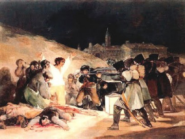
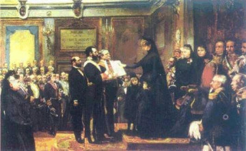
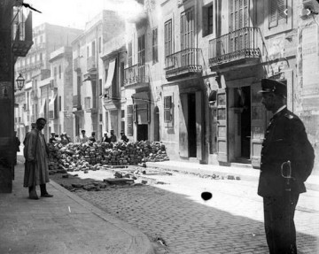
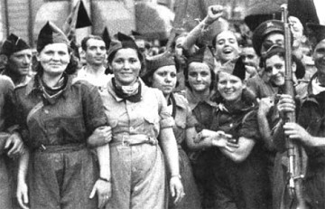
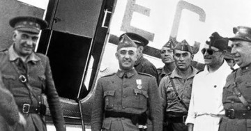
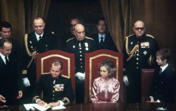
Tema 2: La Construcción del Estado Liberal (1833 - 1868)
La consolidación del parlamentarismo en España: el tortuoso reinado de Isabel II bajo la alternancia de las facciones liberales.
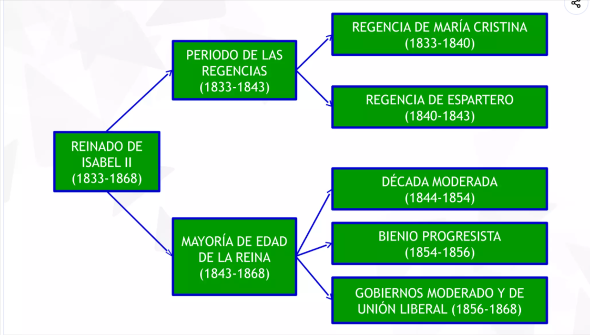
Eje cronológico de la construcción del Estado liberal en el reinado de Isabel II1. El Conflicto Sucesorio y la Primera Guerra Carlista
A la muerte de Fernando VII en septiembre de 1833, la proclamación de su hija Isabel II, de apenas tres años de edad, desató una cruenta guerra civil que duraría siete años. No se trató únicamente de un conflicto dinástico familiar por la Corona; en el fondo, representó el choque definitivo entre los defensores del absolutismo (bando carlista) y los partidarios del nuevo régimen liberal (bando cristino o isabelino).
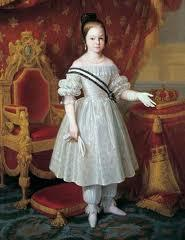
Imagen 1: Retrato de Isabel II de niña (José Esquivel)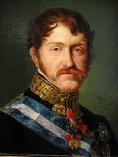
Imagen 2: Carlos María Isidro de Borbón y ParmaEl Origen Dinástico: La Pragmática Sanción
En mayo de 1830 se anunciaba el embarazo de la cuarta esposa del monarca, María Cristina de Borbón. Un de antes, Fernando VII había promulgado la Pragmática Sanción, derogando la Ley Sálica de 1713 que impedía el acceso de las mujeres al trono. Al nacer la infanta Isabel en octubre de 1830, el hermano del rey, el infante Carlos María Isidro, vio cerrado su camino a la herencia legítima y se declaró en rebelión.
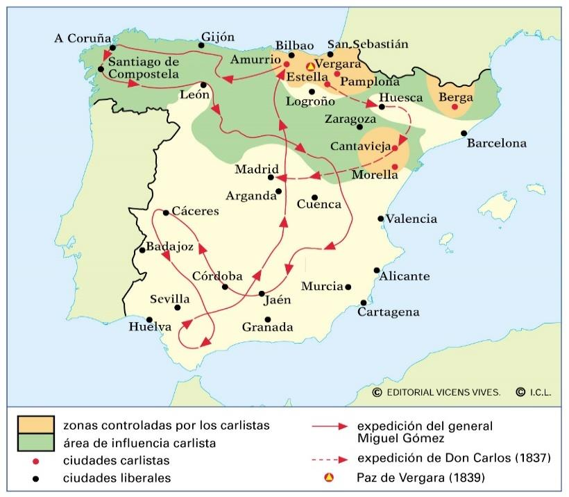
Imagen 3: Mapa de operaciones e influencia de la Primera Guerra CarlistaEl carlismo se estructuró bajo el lema de «Dios, Patria, Fueros, Rey», concentrando sus apoyos sociales en las zonas rurales del País Vasco, Navarra, el Maestrazgo y el campo catalán. El bando isabelino, por su parte, debió pactar con la burguesía y los sectores liberales de las ciudades para garantizar el trono, iniciándose así la demolición definitiva del Antiguo Régimen.
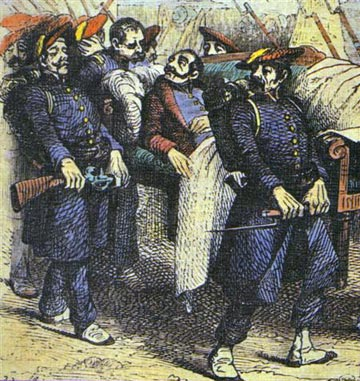
Imagen 4: Retrato de Tomás de Zumalacárregui, estratega carlista Imagen 5: Recreación histórica del Abrazo de Vergara (1839)
Imagen 5: Recreación histórica del Abrazo de Vergara (1839)
🏛️ El Pleito Insular en Canarias (1833 - 1840)
En el plano administrativo del archipiélago, el acontecimiento más trascendental y conflictivo del siglo XIX se desencadenó a raíz de la reorganización territorial de Javier de Burgos en 1833, que estructuró a España en 49 provincias. En dicha norma, se decretó la creación de una única provincia canaria fijando su capitalidad en la ciudad de Santa Cruz de Tenerife.
Esta decisión desplazó del centro de decisión provincial a la élite comercial, política e intelectual de Gran Canaria, intensificando las disputas del pleito insular. La profunda rivalidad entre las élites de Santa Cruz de Tenerife y Las Palmas paralizaba con frecuencia la gestión económica, presupuestaria y fiscal del archipiélago.
A partir de 1840, coincidiendo con la consolidación del régimen liberal isabelino, la representación grancanaria intensificó sus presiones e iniciativas ante las Cortes Generales de Madrid, exigiendo formalmente la división provincial del archipiélago en dos demarcaciones independientes para frenar el monopolio administrativo tinerfeño.
2. Época de las Regencias (1833 - 1843)
Dada la minoría de edad de Isabel II, el poder del Estado fue asumido sucesivamente por dos regentes: la Reina Madre, María Cristina de Borbón (1833-1840), y el héroe militar progresista, el general Baldomero Espartero (1840-1843).
A. La Regencia de María Cristina de Borbón (1833-1840)
La regente nombró inicialmente un gobierno de transición de Cea Bermúdez, bajo el cual se llevó a cabo la división provincial uniforme del país ideada por el ministro de Fomento, Javier de Burgos, en 1833. Posteriormente, llamó al gobierno a un liberal moderado, Francisco Martínez de la Rosa, quien elaboró el Estatuto Real de 1834, una carta otorgada muy restrictiva en la que solo votaban 16.000 varones.
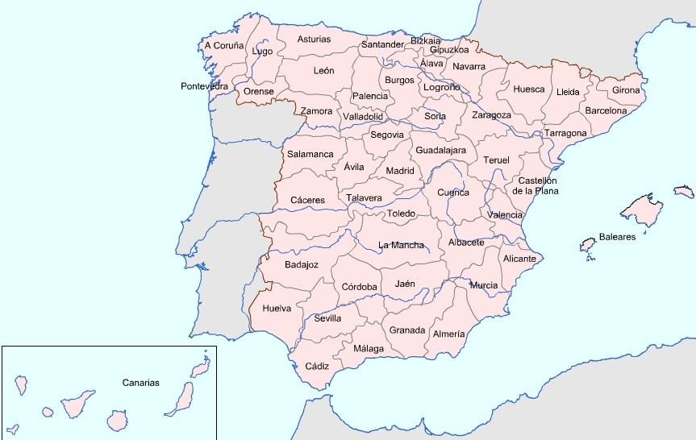
Imagen 6: Mapa provincial de Javier de Burgos (1833)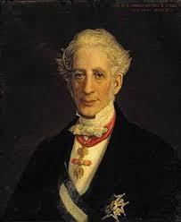
Imagen 7: Francisco Martínez de la Rosa, autor del Estatuto Real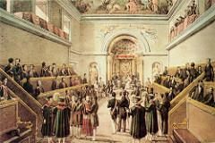
Imagen 8: Inauguración del Estamento de Próceres por la regente María CristinaDesamortizaciones en el Estado Liberal
Ante la urgencia de financiar la Guerra Carlista y sanear la deuda del Estado, el ministro progresista Juan Álvarez de Mendizábal decretó la nacionalización y venta en pública subasta de los bienes raíces de la Iglesia católica (clero regular), exclaustrando a más de 30.000 monjes y clausurando un millar de conventos.
 Imagen 9: Juan Álvarez de Mendizábal, ministro de Hacienda
Imagen 9: Juan Álvarez de Mendizábal, ministro de Hacienda
 Imagen 10: Mapa provincial de las ventas de la desamortización eclesiástica de Mendizábal
Imagen 10: Mapa provincial de las ventas de la desamortización eclesiástica de Mendizábal
La oposición de los moderados a las medidas de Mendizábal forzó su dimisión, lo que provocó en agosto de 1836 la Sargentada de la Granja. Los sargentos forzaron a la regente a restablecer la Constitución de 1812 y convocar elecciones constituyentes, redactándose la Constitución de 1837.
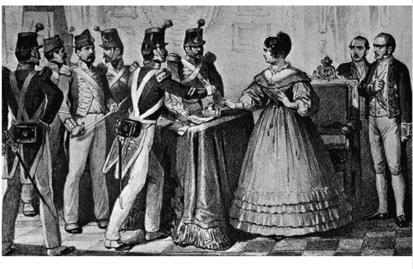
Imagen 11: Pintura histórica de la Sargentada de La Granja (1836)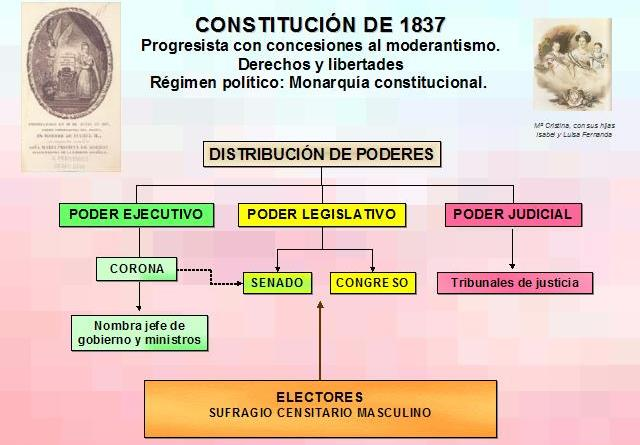
Imagen 12: Esquema organizativo de poderes en la Constitución de 1837B. La Regencia del General Espartero (1840-1843)
La oposición de la reina regente a la progresista Ley de Ayuntamientos la obligó a exiliarse. El general progresista Baldomero Espartero asumió una regencia caracterizada por un marcado centralismo militarista. Su firma de un tratado comercial de librecambio con Inglaterra desató una sublevación industrial en Barcelona, sofocada mediante un bombardeo militar indiscriminado de la ciudad desde Montjuic en 1842, destruyendo unas 400 casas y hundiendo para siempre su popularidad.
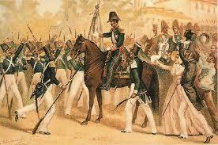
Imagen 13: El general Baldomero Espartero despidiéndose de la Milicia Nacional Imagen 14: Ilustración histórica del bombardeo de Barcelona de 1842
Imagen 14: Ilustración histórica del bombardeo de Barcelona de 1842
🌾 La Repercusión de las Desamortizaciones en Canarias
La aplicación de las leyes desamortizadoras en el archipiélago —destacando la desamortización eclesiástica de Mendizábal (1836) y la civil de Madoz (1855)— fortaleció el poder económico y social de la burguesía terrateniente y comercial autóctona, que adquirió la gran mayoría de las mejores tierras agrícolas e inmuebles subastados por el Estado.
En contrapartida, las desamortizaciones no solucionaron la precaria situación del campesinado canario. La privatización y pérdida de los bienes comunales y de propios de los municipios privó a las capas rurales del libre aprovechamiento de los montes, dehesas y pastos públicos. Esto provocó un drástico empeoramiento de sus condiciones de subsistencia, obligando a los campesinos a someterse a regímenes de arrendamiento abusivos o a emplearse como jornaleros con salarios de miseria.
3. El Reinado Efectivo de Isabel II (1843 - 1868)
Tras derrocar a Espartero, las Cortes adelantaron la mayoría de edad de Isabel II, quien comenzó a gobernar con solo 13 años mostrando una inquebrantable preferencia por los líderes del Partido Moderado.
 Imagen 15: Ramón María Narváez, líder del Partido Moderado
Imagen 15: Ramón María Narváez, líder del Partido Moderado
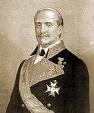
Imagen 16: Leopoldo O'Donnell, creador de la Unión Liberal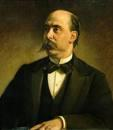
Imagen 17: Francisco Serrano, militar y político claveA. La Década Moderada (1844-1854) y la Constitución de 1845
Bajo el mando del general Ramón María Narváez, se instauró un régimen oligárquico de tintes autoritarios y centralistas plasmado en la Constitución de 1845 (soberanía compartida y sufragio restringido al 1% de la población más rica).
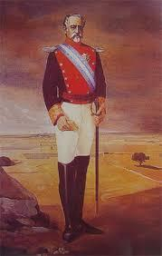
Imagen 18: Duque de Ahumada, fundador de la Guardia Civil (1844)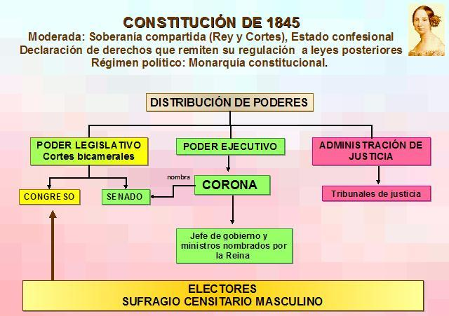
Imagen 19: Estructura de poderes de la Constitución de 1845Durante esta etapa se fundó la Guardia Civil (1844) y se suprimió la Milicia Nacional progresista. También se reformó el sistema tributario unificándolo en impuestos directos e indirectos gracias a la Reforma de Mon-Santillán (1845), y se firmó un Concordato con el Vaticano.
La inestabilidad ministerial fue muy acusada. El autoritarismo de los moderados alcanzó su apogeo con Bravo Murillo en 1852, quien intentó sin éxito transformar el State en una dictadura tecnocrática que gobernara por decreto.
🚢 El Real Decreto de Puertos Francos de 1852
En 1852, durante el reinado de Isabel II, el presidente del Gobierno, el conservador Juan Bravo Murillo, promulgó el histórico Real Decreto de Puertos Francos de Canarias. Esta medida de corte librecambista eliminó o redujo sustancialmente los derechos arancelarios para la importación y exportación de mercancías en el archipiélago. El sistema de franquicias transformó progresivamente a las islas (destacando el Puerto de Santa Cruz de Tenerife y, posteriormente desde 1883, el Puerto de La Luz en Gran Canaria) en plataformas logísticas atlánticas estratégicas para el avituallamiento, el carboneo y la reparación de buques de las potencias navales europeas, atrayendo un importante volumen de capital extranjero y favoreciendo el asentamiento de una próspera comunidad de comerciantes y consignatarios británicos.
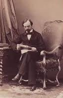
Imagen 20: Carlos VI, conde de Montemolín (2ª Guerra Carlista)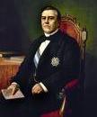
Imagen 21: Juan Bravo Murillo, ministro de Hacienda y FomentoB. El Bienio Progresista (1854-1856)
La deriva dictatorial moderada provocó un pronunciamiento militar del general Leopoldo O'Donnell en Vicálvaro en 1854. El movimiento se radicalizó tras la publicación del Manifiesto de Manzanares, impulsando una gran revuelta popular.
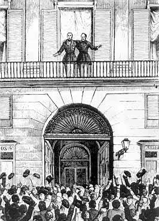
Imagen 22: O'Donnell y Espartero proclaman el triunfo de la Vicalvarada (1854)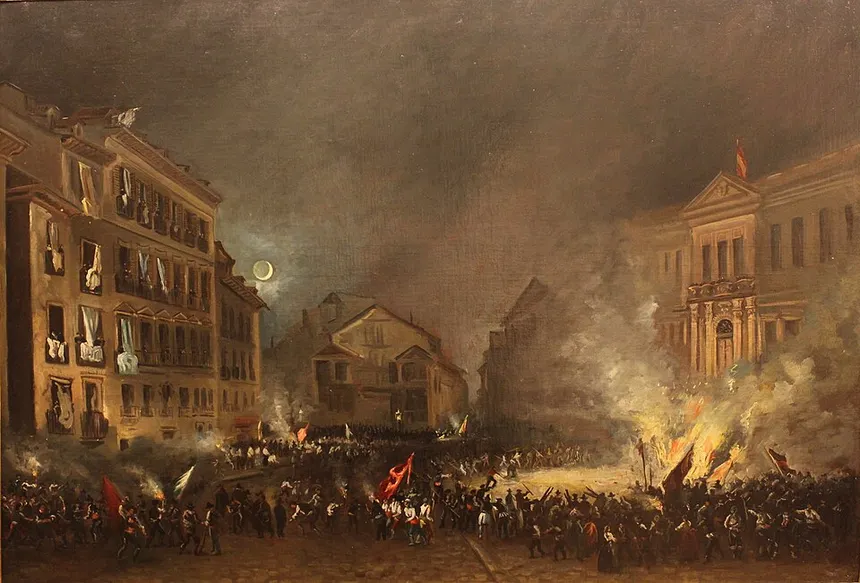
Imagen 23: Pintura histórica de la Revolución de 1854 en la Puerta del Sol📈 El Monocultivo de la Cochinilla y la gran crisis migratoria
En el plano agrícola, el siglo XIX canario estuvo marcado por el espectacular boom de la cochinilla, un parásito criado en las tuneras del que se extraía el ácido carmínico, un valioso tinte natural rojo muy demandado por la industria textil europea durante la Revolución Industrial. Aunque este ciclo agroexportador enriqueció a la burguesía terratendiente y comercial, sometió a la economía insular a una peligrosa vulnerabilidad al descuidar la producción local de cereales y alimentos básicos.
A partir de la década de 1870, el desarrollo e industrialización europea de los colorantes sintéticos (derivados de la anilina) provocó el colapso fulminante de los precios y la demanda del tinte natural, desatando la grave crisis de la cochinilla. La catástrofe agraria dejó sin ingresos al campesinado, sumiendo al campo canario en un paro masivo y una profunda miseria económica.
Ante el desempleo y la falta de alternativas inmediatas en las islas, miles de familias campesinas y jornaleros se vieron forzados a emprender una masiva y dramática ola migratoria hacia América —principalmente con destino a Cuba y Venezuela—. Décadas más tarde, la huella de este fenómeno se reflejaría en el regreso de los pocos emigrantes que lograron hacer fortuna, conocidos popularmente como indianos.
Durante el Bienio se promulgó la Ley General de Ferrocarriles (1855) y el ministro de Hacienda Pascual Madoz sacó a la luz su ley de desamortización civil, afectando muy especialmente a las tierras de propios y comunales de los ayuntamientos.
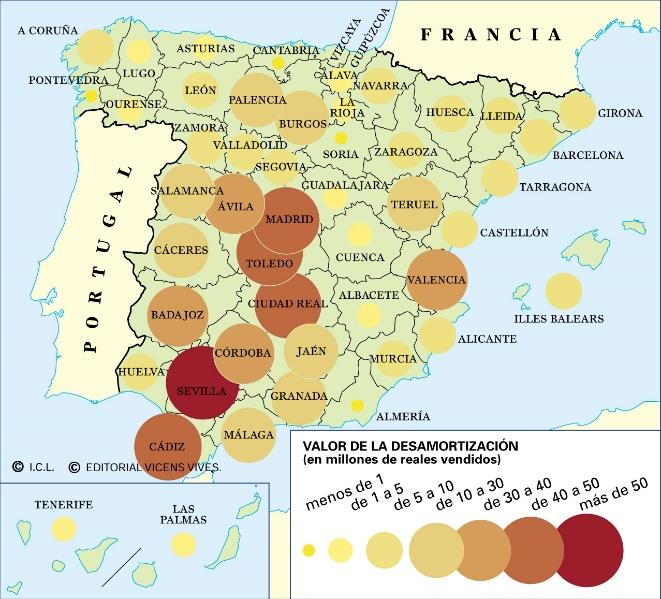
Imagen 24: Mapa provincial del valor de las ventas de la desamortización civil de Madoz (1855)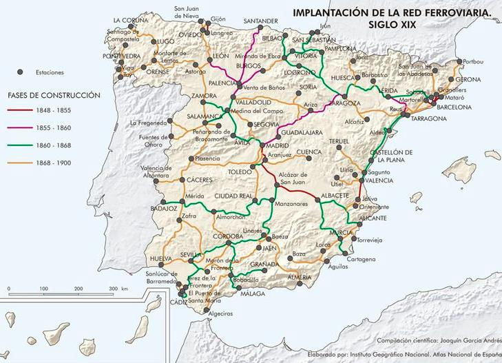
Imagen 25: Trazado radial de la red ferroviaria construida tras la ley del 55C. La Crisis del Final del Régimen Isabelino (1856-1868)
Tras la caída de Espartero, se alternaron en el gobierno los moderados de Narváez y la opción de centro fundada por O'Donnell (la Unión Liberal), que acometió expediciones coloniales de prestigio en la Guerra de Marruecos (toma de Tetuán) y la expedición a Cochinchina.
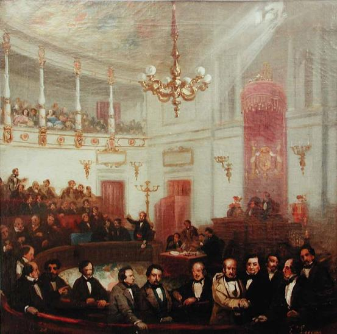
Imagen 26: El Congreso de los Diputados de Madrid (1854) Imagen 27: Pintura de la Batalla de Tetuán de Mariano Fortuny
Imagen 27: Pintura de la Batalla de Tetuán de Mariano Fortuny
La inestabilidad política y el autoritarismo gubernamental moderado (fusilamientos de sargentos en el cuartel de San Gil y la represión estudiantil de la Noche de San Daniel) se unieron a la desastrosa crisis económica y financiera internacional de 1866. Las sucesivas muertes de O'Donnell y Narváez dejaron a la reina aislada, lo que propició el pacto opositor de Ostende para su definitivo derrocamiento.
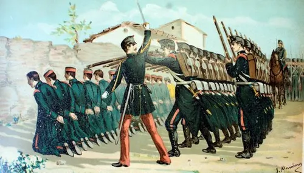
Imagen 28: Ilustración histórica de los fusilamientos de los sargentos en el cuartel de San Gil (1866)4. Diferencias Ideológicas entre Moderados y Progresistas
Este cuadro didáctico sintetiza la división de las dos fuerzas políticas dinásticas que gobernaron a lo largo de toda esta etapa:
👥 Comparativa Doctrinal (Oligarquía vs. Clases Medias)
- Partido Moderado (Narváez): Defendían la Soberanía Compartida (Cortes con el Rey), limitaban con rigor las libertades individuales, abogaban por un sufragio censitario extremadamente restringido (1% de los ricos) y el nombramiento estatal directo de alcaldes de los ayuntamientos. Su base social eran la alta nobleza, terratenientes y jerarquías eclesiásticas.
- Partido Progresista (Espartero/Prim): Defendían la Soberanía Nacional como única fuente de legitimidad, querían el sometimiento de los ministros al control parlamentario de las Cortes, un sufragio censitario masculino más amplio (2,4%), la Milicia Nacional voluntaria y la libre elección municipal de los alcaldes por parte de los vecinos. Su base eran las clases medias urbanas.